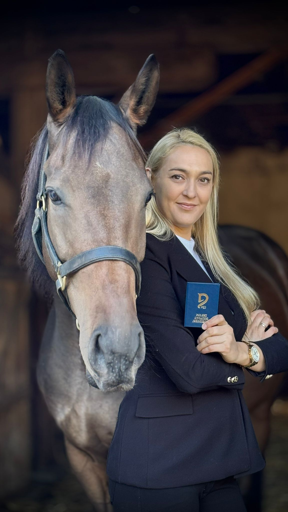

Sylwia
Instruktorka jazdy konnej, licencja PZJ
Z końmi związana od ponad 30 lat, a każda chwila spędzona w stajni to dla niej nie tylko praca, ale przede wszystkim pasja i miłość, które od zawsze wyznaczają kierunek jej życia. ❤️
👉 P. Sylwia z ogromnym zaangażowaniem prowadzi treningi zarówno dla początkujących jeźdźców, którzy dopiero stawiają pierwsze kroki w siodle, jak i dla osób zaawansowanych, chcących rozwijać swoje umiejętności. Każdy trening dostosowany jest indywidualnie – tak, aby dawał radość i satysfakcję z postępów.
🐴 Najważniejszą wartością w pracy p. Sylwii jest dobro konia – szacunek, cierpliwość i zrozumienie dla tych wyjątkowych zwierząt. Uczy jeźdźców nie tylko techniki, ale również odpowiedzialności i właściwego podejścia do koni, które są partnerami, a nie narzędziami w nauce jazdy.
💬 „Konie nauczyły mnie cierpliwości, pokory i radości z najmniejszych postępów – to lekcje, które staram się przekazywać każdemu jeźdźcowi."
Chcesz rozpocząć swoją przygodę z końmi albo rozwinąć dotychczasowe umiejętności? Zajęcia z p. Sylwią to połączenie profesjonalizmu, doświadczenia i ogromnego serca.